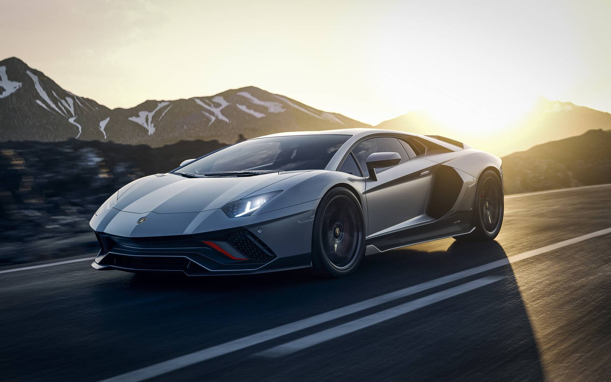

Our Models
Lamborghini Huracán
The Lamborghini Huracán is a mid-engine sports car that was introduced in 2014. It features a 5.2-liter V10 engine that produces up to 631 horsepower, and it can reach a top speed of 201 miles per hour.
The Huracán comes in various trim levels, including the Huracán EVO, Huracán STO, and Huracán Performante, each with its own unique features and performance capabilities.
Lamborghini Aventador
The Lamborghini Aventador is a high-performance sports car that was first introduced in 2011. It features a 6.5-liter V12 engine that produces up to 769 horsepower, and it can reach a top speed of 217 miles per hour.
The Aventador comes in various trims, including the Aventador S, Aventador SVJ, and Aventador Ultimae, each with its own unique features and performance capabilities.
Lamborghini Urus

The Lamborghini Urus is a luxury SUV that was introduced in 2018. It features a 4.0-liter V8 engine that produces up to 641 horsepower, and it can reach a top speed of 190 miles per hour.
The Urus is a unique addition to the Lamborghini lineup, offering the performance and style of a sports car with the practicality and versatility of an SUV.
Lamborghini Sian
The Lamborghini Sian is a limited-edition hybrid supercar that was introduced in 2019. It features a 6.5-liter V12 engine combined with an electric motor, producing a combined output of 819 horsepower, and it can reach a top speed of 217 miles per hour.
The Sian is a groundbreaking model for Lamborghini, incorporating hybrid technology for the first time in a production car, while still maintaining the high-performance and luxurious features that the brand is known for.